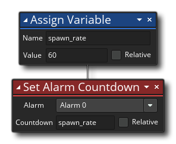
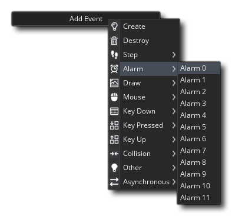
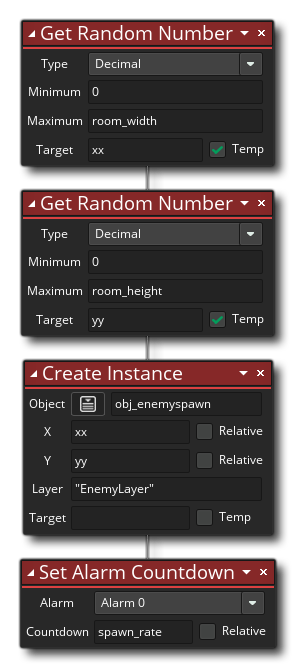
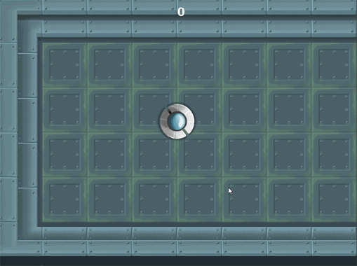

We have our enemy spawn object now, but we don't have anything to re-spawn the enemies when there are none left, so for that we are going to create a controller object called obj_spawner. Go ahead and create a new object now and give it that name. You don't need to assign a sprite to it, but you will need to open up the Create Event. We are going to use alarms in this object to create instances of our enemy spawn object within the room, so to start with add the following Actions into the Create Event: 
The first action sets a variable to control the speed at which enemies will spawn. The next action sets the alarm [0] to the value of spawn_rate. But what are alarms? They are special events that will count down every game frame until they reach 0, at which time they will perform the action code added into the event in the object. So, in our actions we are setting the alarm[0] to 60, meaning that it will subtract 1 from 60 every game frame until it reaches 0 at which point any code in the alarm[0] event will run. You have 12 alarm events and they can also be accessed using the built in variable array alarm[0 .. 11].
You need to add the corresponding alarm event now, so since we are using alarm[0] you need to add Alarm Event 0: 
This event will only trigger when the alarm[0] array has counted down to 0 and in it we want to add the following: 
Here we are creating an enemy spawn object at a random position within the room and on the layer we created at the start of this chapter. We then reset the alarm to the spawn_rate value so that it will count down again and spawn another one. In this way, every 60 frames a new enemy will be created for the player to shoot at.
You can close this object now and go back to the game room. We had added in enemy spawn objects but we don't need them anymore so select them and delete them ( +
+  to select, and
to select, and  to delete). Now drag an instance of the controller object obj_spawner into the room and run the game.
to delete). Now drag an instance of the controller object obj_spawner into the room and run the game.
